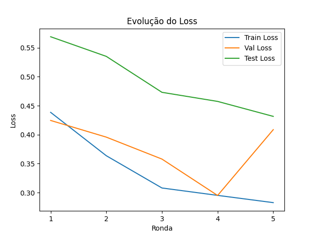
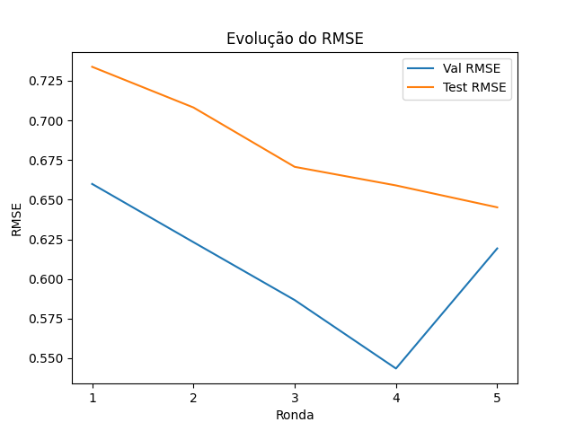

Relatório Federado - Cliente 2
Resumo das Métricas
Métrica
Valor Final
Train Loss
0.2826790916068213
Val Loss
0.40863128900527956
Val RMSE
0.6192464828491211
Test Loss
0.4315283238887787
Test RMSE
0.6451647877693176
Plots de Evolução
 
Explicabilidade
LIME (última ronda)
SHAP (última ronda)
Artefactos e Downloads
Histórico de Métricas (JSON)
Modelo Treinado (.pt)
Info.txt
LIME Explanation (texto)
SHAP Values (.npy)
Gerado automaticamente em 2025-04-28 10:59:32